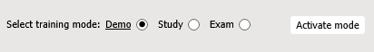
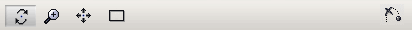

Application de formation 3D – interface utilisateur
Cette application de formation 3D permet d'étudier la procédure de formation. Vous pouvez utiliser l'application de formation dans trois modes différents :
- Mode Démo – lecture automatique de la procédure. Vous pouvez lire les étapes souhaitées plusieurs fois à différentes vitesses et examiner la procédure sous différents angles.
- Mode Etude – lecture interactive de la procédure. Vous pouvez exécuter la procédure à l'aide de plusieurs conseils.
- Mode Examen – test de vos connaissances. La procédure doit être exécutée sans aucun conseil.
Environnement de formation
Le volet inférieur permet de sélectionner et d'activer le mode de formation approprié :

Dans les modes Démo et Etude, vous pouvez contrôler la lecture de la procédure en utilisant un panneau de configuration de type magnétoscope :

- Lire l'étape commence (ou arrête) la lecture de la procédure.
- Réinitialiser l'étape arrête et revient au début de l'étape en cours.
- Etape précédente revient en arrière à l'étape précédente.
- Etape suivante avance jusqu'à l'étape suivante.
- Désactiver le mode Annule le mode actuel.

- Emplacement Déplace la caméra vers la zone appropriée du modèle 3D.
Le volet Opération représente l'opération ou le groupe d'opérations attendu. Vous devez lire les instructions et effectuer des actions, telles que saisir le paramètre demandé ou sélectionner l'objet qui participe à une procédure :

Le volet supérieur permet de passer en revue la procédure :

- Document. Affiche la partie du document qui est associée à l'étape de procédure actuellement active.
- Instructions. Affiche les commentaires associés à l'étape de formation en cours.
- Articles. Affiche la liste des objets interactifs dans la formation en cours. Permet de rechercher l'emplacement des objets et d'afficher des méta-informations supplémentaires.
- Paramètres. Affiche la liste des paramètres utilisés dans la formation en cours. Ces paramètres sont utilisés comme sauts conditionnels dans le scénario de formation. Vous pouvez être invité à entrer un tel paramètre.
Modes de formation
Mode Démo
- Pour accéder à ce mode, sélectionnez le mode Démo, puis cliquez sur Activer le mode.
- Pour commencer la lecture, cliquez sur Lire l'étape. La description de l'étape actuellement active est affichée sur la page à onglets Document.
- La procédure sera affichée en continu.
- Pour arrêter temporairement la lecture, cliquez sur Pause. Cliquez sur Lire pour poursuivre la lecture.
- Pour afficher la description de l'ensemble de la procédure, cliquez sur Document.
- Vous pouvez naviguer dans la fenêtre 3D (consultez Navigation dans la section fenêtre 3D de ce document).
- La page à onglets Pièces permet de mettre en surbrillance la pièce désirée dans la fenêtre 3D (cliquez sur localiser) et d'afficher des informations supplémentaires (cliquez sur méta).
- Pour passer à l'étape suivante ou précédente de la procédure, cliquez sur Etape suivante ou Etape précédente.
- Pour quitter le mode Démo, cliquez sur Désactiver le mode.
Mode Etude
- Pour accéder à ce mode, sélectionnez le mode Etude, puis cliquez sur Activer le mode.
- Cliquez sur Lire l'étape pour commencer l'étude de la procédure. Vous devez suivre les instructions qui apparaissent dans le volet Opération. Il existe trois groupes d'instructions :
- Localisez les pièces impliquées dans l'étape de procédure actuelle, puis cliquez sur celles-ci dans la fenêtre 3D ou sur la page à onglets Pièces.
- Choisissez la bonne réponse dans la liste de sélection.
- Spécifier une valeur pour un paramètre.
- Le bouton Omettre permet de passer à l'opération suivante dans le scénario de formation.
- Le Résultat de test indique visuellement les erreurs effectuées (vert : correct, rouge : incorrect). Le niveau de l'erreur est spécifié dans la simulation 3D et augmente graduellement pour l'étape en cours. Chaque nouvelle étape commence par le niveau d'erreur zéro.
- Effectuez toutes les étapes et cliquez sur Désactiver le mode chaque fois que vous êtes prêt à quitter le mode Etude.
Mode Examen
- Pour accéder à ce mode, sélectionnez le mode Examen, puis cliquez sur Activer le mode.
- Cliquez sur Début pour lancer le test. Ici, vous devez exécuter les actions de la même manière que dans le mode Etude, mais les conseils ne sont plus disponibles.
- Pour quitter le mode Examen, cliquez sur Désactiver le mode.
Navigation dans la fenêtre 3D
Vous pouvez naviguer dans la fenêtre 3D à l'aide de la souris ou de la barre de navigation :

Pour faire un zoom avant /zoom arrière sur le modèle 3D :
- Utilisez la molette de la souris ;
- Ou bien cliquez sur Zoom
 sur la barre de navigation, placez le pointeur n'importe où dans la fenêtre 3D, appuyez sur le bouton gauche de la souris, puis déplacez la souris tout en maintenant le bouton gauche enfoncé.
sur la barre de navigation, placez le pointeur n'importe où dans la fenêtre 3D, appuyez sur le bouton gauche de la souris, puis déplacez la souris tout en maintenant le bouton gauche enfoncé.
Pour déplacer la caméra vers le haut/vers le bas ou vers la gauche/vers la droite :
- Positionnez le pointeur n'importe où dans la fenêtre 3D, puis déplacez la souris en appuyant sur le bouton du milieu (ou la molette de la souris).
- Ou bien cliquez sur le bouton Panoramique
 de la barre de navigation, placez le pointeur sur 3D et déplacez la souris tout en maintenant enfoncé le bouton gauche.
de la barre de navigation, placez le pointeur sur 3D et déplacez la souris tout en maintenant enfoncé le bouton gauche.
Pour que le modèle 3D soit entièrement visible dans la fenêtre 3D :
- Cliquez sur Ajuster
 dans la barre de navigation.
dans la barre de navigation.
Pour faire pivoter le modèle 3D :
- Cliquez sur Faire pivoter
 dans la barre de navigation, placez le pointeur sur le modèle 3D et déplacez la souris tout en maintenant enfoncé le bouton gauche.
dans la barre de navigation, placez le pointeur sur le modèle 3D et déplacez la souris tout en maintenant enfoncé le bouton gauche.
Pour spécifier le centre de rotation en 3D :
- Appuyez sur la touche ALT et cliquez sur une géométrie dans la fenêtre 3D.
- Ou placez le pointeur sur une géométrie dans la fenêtre 3D, puis cliquez sur le bouton central de la souris (ou la molette de la souris).
Pour passer à l'étape de procédure suivante (animation) :
- Cliquez sur Ignorer l'animation actuelle
 .
.
Paramètres
- Vitesse. Définit la vitesse pour rejouer la procédure 3D.
- Geler point de vue. Si sélectionné, la position actuelle de l'afficheur est utilisée pendant la lecture.
- Désactiver le message d'alerte. Si sélectionné, bloque la sortie des messages d'alerte.
- Activer le contraste supplémentaire pour les pièces en mode Démo et Étude. Si sélectionné (par défaut), une sphère translucide clignotante apparaît au-dessus de l'objet sélectionné en 3D pour attirer l'attention du stagiaire.
- Lire en continu en mode Démo. Si sélectionné (par défaut), permet de rejouer sans interruption la procédure de formation. Si cette option n'est pas cochée, la lecture s'arrête après chaque étape.
- Activer les conseils directs en mode Étude. Affiche ou masque, dans le volet Opération, les informations sur les actions de stagiaire qui doit être exécutées. L'activation des conseils directs vous permet de localiser la pièce en utilisant le bouton Localiser pièce (elle a le nom de la pièce requise). En outre, lorsque les conseils directs sont activés, les réponses correctes sont affichées dans la liste de Choix.
- Afficher le cube de navigation. Affiche ou masque le cube de navigation dans la fenêtre 3D. Le cube de navigation comporte trois types de zones de HotSpot : arête, coin et face. Lorsque vous positionnez le pointeur sur l'arête, le coin ou la face du cube de navigation, la zone correspondante est mise en surbrillance. Avec ces zones, vous pouvez basculer entre les vues standard et effectuer des rotations.
- Afficher les arêtes de surface. Si sélectionné, active l'affichage des contours de surface dans la fenêtre 3D.
- Anticrénelage. Active une technique pour minimiser les artefacts de distorsion dans la fenêtre 3D.
- Occlusion ambiante. Active l'ombrage de l'occlusion ambiante et la technique de rendu dans la fenêtre 3D.
- Repérer les objets survolés. La sélection est entourée.